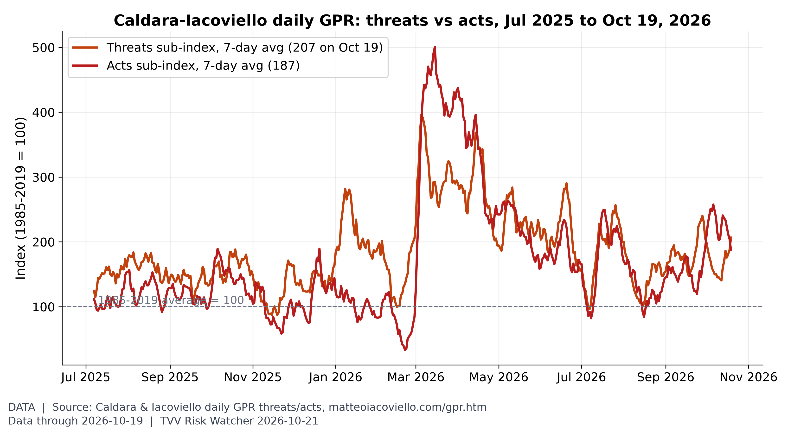
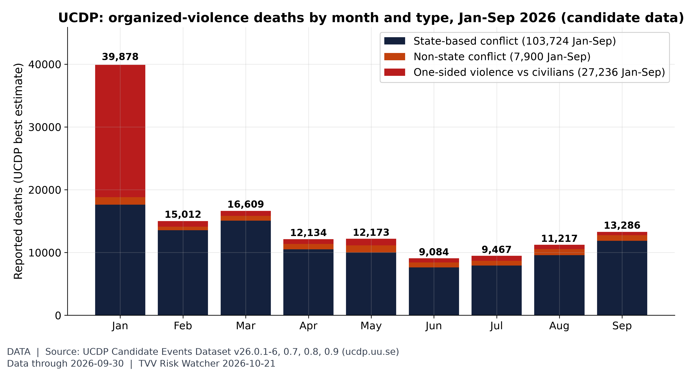
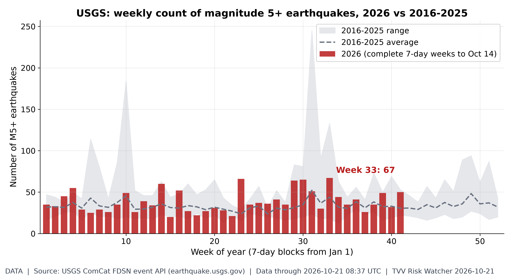
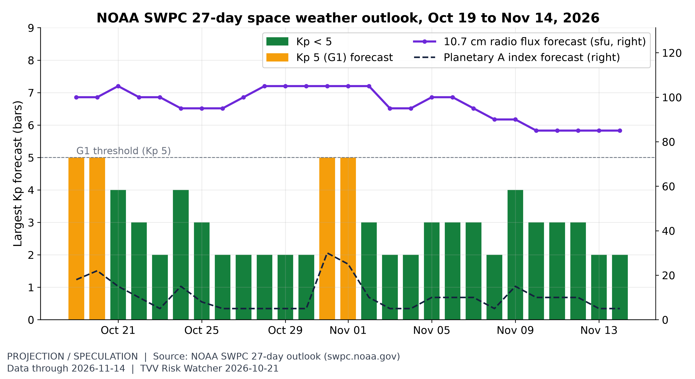
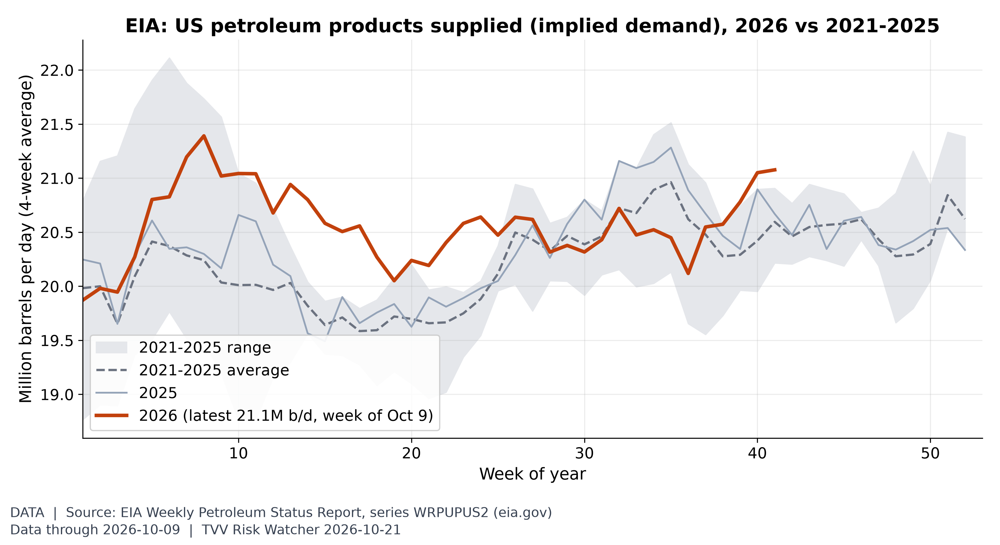
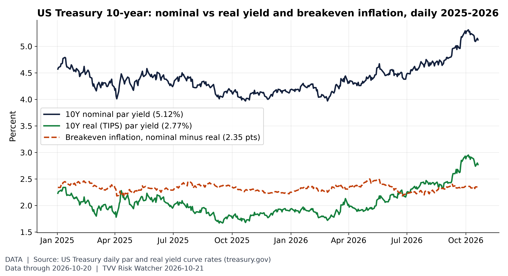
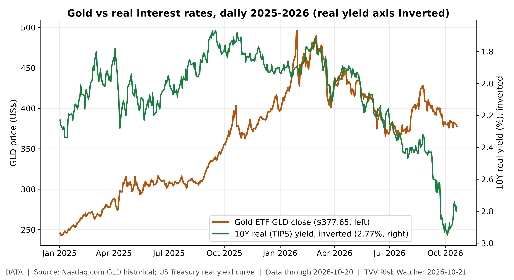
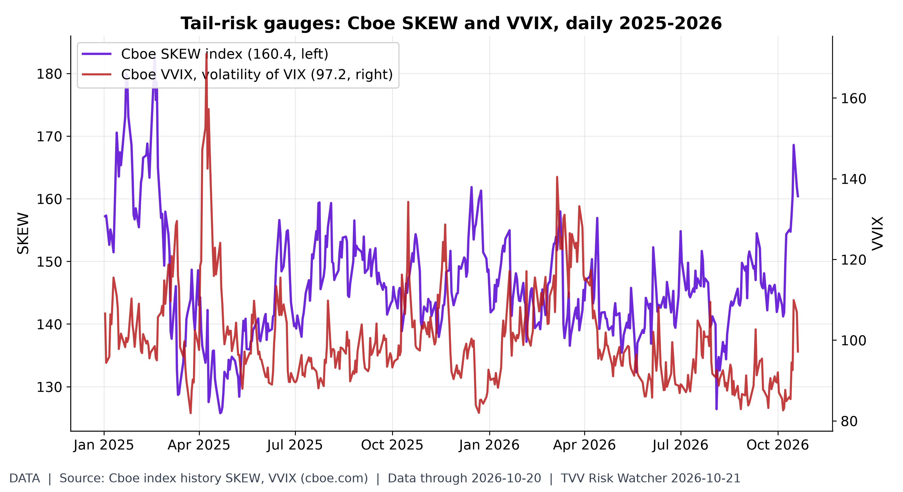
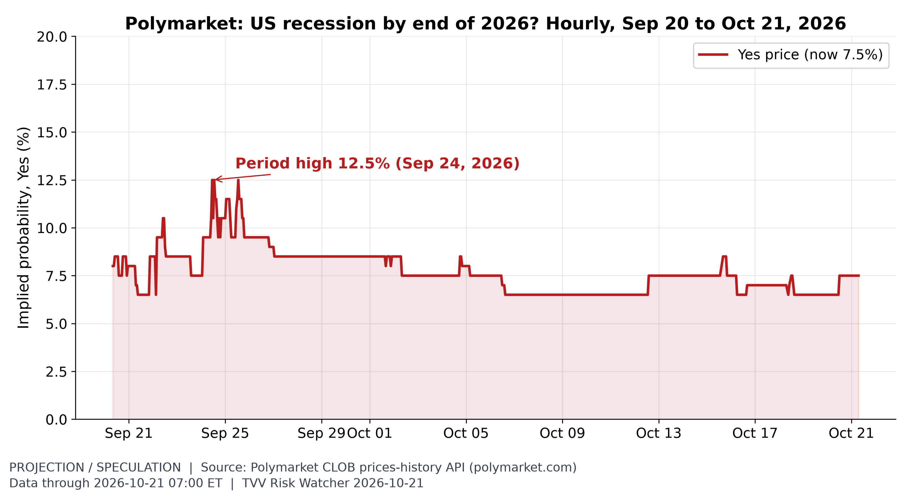
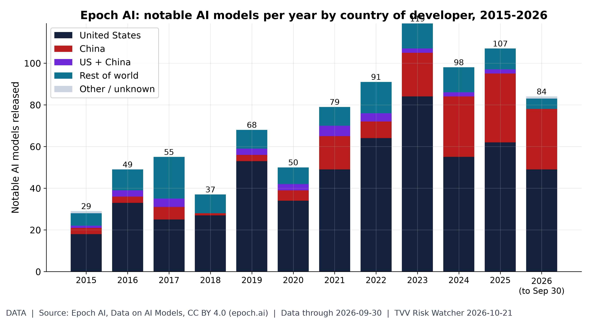

TVV RESEARCH SLATE — October 21, 2026 — 11 desks
1. Major Geopolitical Conflict Developments

Threats vs acts. In the week to Oct 19 the threats sub-index averaged 207 and the acts sub-index 187 (2026 highs of the 7-day averages: threats 396 on Mar 5, acts 501 on Mar 15). [Data; data as of 2026-10-19 (daily; GPRD_THREAT / GPRD_ACT)] Source: matteoiacoviello.com data page
- ★ Hormuz southern corridor: UANI's Oct 20 imagery showed numerous ships crossing the southern corridor, many US-facilitated with AIS off; CENTCOM said Oct 20 about 95% of ships have transited safely. No new JMIC note since Oct 18 (Update 106: SEVERE). UANI Oct 20 shipping update · CENTCOM via Al Jazeera · JMIC Update 106 PDF
- Hormuz counts: Windward logged 10 crossings on Oct 20 (4 inbound, 6 outbound; 3 via the southern corridor, 2 dark), down from 15 a day earlier, with 211 vessels GPS-jammed; CENTCOM said ships moving safely have carried more than 1.4 billion barrels. Windward daily intelligence · CENTCOM via Al Jazeera
- UKMTO advisory 178-26: a tanker was subject to an interaction with military forces about 121 NM east of Duqm, Oman, at 1000 UTC Oct 19; Iran's Revolutionary Guards Navy said Oct 20 a supertanker caught fire after striking a sea mine south of Hormuz, Reuters reported citing Iranian media; Kpler counted at least 18 vessel attacks in two weeks. UKMTO advisory 178-26 · Reuters via CNBC
- Blockade: UANI counted at least 52 tankers laden with Iranian oil along Iran's coastline on Oct 20 and 47 Iranian loadings since the blockade was reinstated, only eight from Kharg; the LPG carrier BANIAN, with 490,000 barrels, anchored off Shinas, Oman. UANI Oct 20 shipping update
- ★ Ukraine's Air Force said Russia launched Iskander-K cruise missiles and 186 drones, 88 of them jet-powered, from 18:00 Oct 20; 150 were downed or jammed by 08:30 Oct 21 with hits at 27 locations. Drones killed two in Kharkiv region overnight after one died in Kyiv on Tuesday. Ukrainska Pravda Air Force · Kyiv Post casualties
- ★ Putin met US envoy Witkoff in St. Petersburg on Oct 21: Witkoff briefed him on the Oslo talks and urged resuming trilateral technical talks after Russia freed American Stephen Hubbard; Putin said a first 40,000-tonne diesel tanker sails in two to three days. Kremlin transcript · CNN St. Petersburg talks
- Oslo Oct 20: Zelensky's talks with Witkoff were called constructive with meaningful progress, Zelensky said US early-warning intelligence sharing was restored, and Lavrov said Moscow would make no political concessions. Guardian war briefing · Euronews Oslo · CNN St. Petersburg talks
- ★ Yemen: the toll from the Houthi missile strike on a Shabwa training centre rose to 73 with 14 missing on Oct 20; the coalition intercepted a ballistic missile fired at Riyadh and destroyed its launcher, and the UK will fly RAF Typhoon defensive missions over Saudi Arabia. Anadolu Shabwa toll · Arab News Riyadh missile · GOV.UK Typhoon update
- Iran-US: Araghchi said Oct 20 indirect talks continue through Pakistan and Qatar and that Washington accepted Iran's seven-day Hormuz plan but wants added provisions; Fox News reported a third US carrier and about 10,000 personnel heading to the region by the end of November. Iran International Araghchi
- Araghchi said Iran has had no reply from Saudi Arabia or the Houthis to its mediation offer and that Egyptian intervention would further complicate the war, ahead of the Oct 26 vote in Egypt's parliament on military support for Riyadh. Iran International Araghchi · Al Jazeera Egypt vote
- Israel votes Oct 27: a Walla poll published Oct 20 put Eisenkot's Yashar at 23 seats to 19 for Likud and the coalition bloc at 48 against 54 for the opposition, neither at 61; Netanyahu said Oct 20 toppling Iran's regime is the primary objective. Jerusalem Post / Walla poll · Iran International Netanyahu
- Taiwan's MND tracked 29 PLA aircraft sorties, six PLAN ships and nine official ships from 6 a.m. Oct 20 to 6 a.m. Oct 21; 23 of the sorties crossed the median line. Taiwan MND Oct 21
- Iran-Pakistan trade: commercial traffic at the Gabd-Rimdan and Taftan crossings was halted as of Oct 20, Iran International said, with about 3,000 trucks queued. Iran International border
- YouTube pick (Oct 19): PBS Washington Week panel on Trump's U-turn away from Ukraine and toward Russia, aired as Oslo and St. Petersburg talks were set. PBS Washington Week video
- YouTube pick (Oct 20): GZERO on what a Democratic Congress would mean for Trump and the GOP, 13 days before the midterms. GZERO video
2. Major Terror / Security Incidents
- ★ Pakistan: gunmen shot dead the additional SHO of Miranshah police, Meera Khan, on Oct 20 in North Waziristan, Dawn reported, as CRSS data show violence-linked deaths up 83% in the third quarter, with 829 in Balochistan and 556 in Khyber Pakhtunkhwa. Dawn Miranshah attack
- Nigeria: Operation Hadin Kai said Oct 20 that seven air strikes in Borno and Adamawa over the past 10 days killed 103 ISWAP fighters, including Jindullah and Shura member Abul Kissa in a strike on Oct 18; the tolls were not independently confirmed. Guardian Nigeria ISWAP
- Australia: Brendan Nugent, 43, was charged with dangerous driving causing serious injury, intentionally causing serious injury and harming a Commonwealth official over the injuries to MP Helen Haines, who is critical but stable; police are probing sovereign-citizen links, ABC said Oct 21. ABC News Haines charges
- Somalia: Puntland forces killed two al-Shabaab members in the Cal Madow range near Galgala on Oct 20 as they tried to plant a landmine, a day after a mine on the Galgala road injured five, mostly security personnel. Somaliland Standard Galgala

Violence against civilians in context. UCDP's candidate events record 138,860 deaths Jan-Sep 2026, 27,236 of them in one-sided violence against civilians (top: Iran 19,901, Nigeria 1,884, DR Congo (Zaire) 1,357). January's 39,878 is mostly UCDP's estimate for the Iranian government's Jan 8 killings of civilians (state, not terrorist, violence); September 13,286. Candidate data are preliminary. [Data; data as of 2026-09-30 (UCDP Candidate GED v26.0.9, released Oct 2026; preliminary)] Source: ucdp.uu.se data page
3. Earthquakes and Eruptions
- ★ USGS lists no new damaging quake since Oct 9 and no M6+ since the Vanuatu M6.3 at 0420 UTC Oct 20; the largest since were an M5.4 192 km south of Burica, Panama, on Oct 20 and an M5.2 off Cabatuan, Philippines, at 0837 UTC Oct 21, with no PAGER alert. USGS M4.5+ week feed · USGS Philippines M5.2
- New Zealand raised Whakaari/White Island's volcanic alert level to 3 and its aviation colour code to orange on Oct 21 amid weak, continuous ash emission, RNZ reported. RNZ Whakaari alert
- Azores: a USGS M5.1 quake 39 km west of Mosteiros at 1807 UTC Oct 20 was felt on São Miguel, Santa Maria and Terceira; regional civil protection reported no casualties or damage. USGS Azores M5.1 · Portugal News civil protection

Weekly M5+ quake count. 2026 has 1,624 M5+ quakes through Oct 21 vs a 2016-25 average of 1,392 by this date (range 1,191-1,890); the busiest 2026 week was week 33 with 67. [Data; data as of 2026-10-21 08:37 UTC (USGS ComCat, pulled ~7:05 AM ET Oct 21)] Source: earthquake.usgs.gov data page
4. Solar / Space Weather
- ★ SWPC has a G1 watch for Oct 21 from a coronal-hole stream: Kp hit 4.00 at 03-06 UTC, triggering a K-index 4 alert, and its 0030 UTC forecast gives Kp 4.67 (G1) for 06-09 UTC; unsettled to active periods follow through Oct 22. SWPC 3-day forecast · SWPC alerts
- Flares stayed low: Region 4551 fired a C1.4 at 1836 UTC Oct 20 as it began crossing the western limb and Region 4557 a C3.5; SWPC gives M-class (R1-R2) odds of 25% a day through Oct 22, falling to 20% on Oct 23 as 4551 exits. SWPC forecast discussion
- SWPC said several northerly and northeasterly CMEs were all far-side, no S1 radiation storm is expected through Oct 23, and >2 MeV electron flux could reach high levels on Oct 23. SWPC forecast discussion

The month ahead in space weather. SWPC's 27-day outlook (issued 2026 Oct 19 0141 UTC) flags its next Kp 5 (G1-level) days on Oct 31, Nov 1 (Oct 21: Kp 4), with radio flux 85-105 sfu. It is a recurrence-based outlook, not a storm warning. [Projection/Speculation; data as of 2026-11-14 (outlook issued 2026 Oct 19 0141 UTC; weekly product)] Source: swpc.noaa.gov data page
5. Critical Infrastructure / Transportation Disruptions
- ★ Ukraine power: Ukrenergo said Russian strikes left consumers without power in Kyiv, Odesa, Ternopil, Kherson, Kharkiv and Zaporizhzhia regions on Oct 21, with up to two rounds of hourly outages in some regions; consumption ran 2.7% higher. Censor.NET / Ukrenergo
- Subsea cables: IRGC political deputy Yadollah Javani said Oct 21 Iran would target internet cables in Hormuz if its infrastructure is attacked; Windward said Iraq, Kuwait, Bahrain and Qatar have no cable route that avoids the strait. Iran International IRGC cables · Windward daily intelligence
- Saudi aviation: Cirium counted 5,547 of 12,195 Saudi departures, 45.49%, cancelled or no-fly in the 12 days to Oct 19; Etihad and Indian airlines suspended Saudi flights to Oct 24 and Akasa Air to Oct 27. Gulf News / Cirium
- Ahold Delhaize said Oct 19 Albert Heijn home deliveries resume Oct 23 after its cyber incident and US e-commerce is returning; the Boston Globe said Stop & Shop online services came back Oct 20. Ahold Delhaize update · Boston Globe Stop & Shop
- Hyderabad: a car crashed into the Krishna Phase-II drinking-water main near Nagole Metro on Oct 20, killing a man and disrupting supply until a five-hour repair, The Hindu said. The Hindu Krishna pipeline
- YouTube pick (Oct 19): CNBC on how the race to power AI data centres is reshaping America's electric grid. CNBC video
- YouTube pick (Oct 19): Cleaning Up on Ukraine building a distributed energy system under Russian strikes. Cleaning Up video

US oil demand vs normal. US products supplied averaged 21.08M b/d over the 4 weeks to Oct 9 (single week 21.36M), vs a 2021-25 average of 20.60M for that week (range 20.22-20.91M). [Data; data as of 2026-10-09 (weekly; held: next EIA report due Wed Oct 21 ~10:30 AM ET)] Source: eia.gov data page
6. Econo-Metrics
- ★ Gasoline: AAA's national regular average fell to $4.2644 a gallon on Oct 21 from $4.2786 a day earlier and $4.3333 a week ago, versus $3.0478 a year ago; diesel slipped to $6.3174. AAA national average
- ★ Electricity: no new EIA wholesale print since Oct 15; Europe's Oct 21 day-ahead power ran from €36.61/MWh in Finland to €246.11/MWh in Romania, with Germany at €211.94. prices.eu.org day-ahead · EIA wholesale data
- ★ FedWatch: fed funds futures priced an 86.0% chance of an Oct 28 hold at the latest close, up 2 points in a day, with a 14.0% chance of a 25bp hike, SessionOpen's tracker showed Oct 21. SessionOpen Fed Watch · CME FedWatch tool
- Tuesday Oct 20: the Dow rose 1.02% to 52,495.88 and the S&P 500 0.28% to 7,712.57 while the Nasdaq slipped 0.02%; healthcare hit a record, the Russell 2000 gained 1.7% and the 10-year yield fell 1.9bp to 5.116%. Reuters via Investing.com · Morningstar 10-year
- Oil: Brent rose 0.78% to $109.64 by 0022 GMT Oct 21 on Red Sea and Saudi infrastructure risks, Reuters said; Energy Department officials said Oct 20 they are working with refiners worldwide to boost output as a diesel shortage lifts prices. Reuters via CNBC
- Earnings: General Motors fell 6.8% Oct 20 while Equifax rose 11.3% and Hasbro 11.2%; Netflix dropped 6% after hours, Reuters said, and Tesla reports Oct 21. Reuters via Investing.com
- YouTube pick (Oct 19): WSJ interview, Jamie Dimon on the biggest risks facing the global economy. WSJ video
- YouTube pick (Oct 19): Bloomberg on Nscale's $30 billion IPO ambition meeting investor pushback, a test of AI-infrastructure financing. Bloomberg video

Inflation expectations in the bond market. On Oct 20 the 10Y par yield was 5.12% and the 10Y real (TIPS) yield 2.77%, a breakeven of 2.35 points (2026 range 2.18-2.50). Breakeven also carries an inflation-risk premium. [Data; data as of 2026-10-20 (Treasury daily par and real yield curves)] Source: home.treasury.gov data page
7. Epidemic / Bio-Metrics
- ★ Critical Water Shortage: Sangareddy, Telangana, supplies many colonies once every three days and some every four to five days, with 15 tankers for about 1.2 lakh people (Oct 20). New Indian Express Sangareddy
- ★ Ebola: Nigeria confirmed its first case on Oct 20, a woman in Abuja who had travelled from Uganda, tracing 44 contacts; Kenya confirmed a ninth case, all in one cluster. Al Jazeera Nigeria/Kenya Ebola · AP Kenya Ebola
- DRC Ebola SitRep 158 (Oct 19, published Oct 20): 9,637 confirmed cases and 4,646 deaths, with 85 new cases and 44 deaths in a day; Nord-Kivu holds 509 patients for 410 beds and contact follow-up was 77.8%. Ebola tracker SitRep 158
- Critical Water Shortage: MIDC will add water cuts in Uran from Oct 27 as Ransai dam falls; parts of Chanje and Kegaon already get water for 30 minutes once every 15 days, affecting more than 2 lakh people. Free Press Journal Uran
- Critical Water Shortage: Cambridge, Massachusetts, moved to Level 2 Significant Drought on Oct 20, with water-use restrictions in effect and its Hobbs Brook reservoir about 36% below the 15-year average. City of Cambridge notice
- Pennsylvania warned of congenital measles: 66 pregnant women have had measles since its outbreak began, doctors report at least six babies born infected, and the state count stands at 1,286 of 4,410 US cases, NBC News said Oct 20. NBC News PA measles
Gold and Silver
- ★ Kitco 6:08 a.m. ET Oct 21: gold $4,116.00, silver $57.09, platinum $1,624, palladium $1,066, copper $6.5617/lb; bitcoin $83,287.51, ether $2,449.60, XRP $1.35. Kitco text quotes · Kitco live prices
- Kitco showed gold down 0.20%, silver down 1.35%, platinum down 1.40%, palladium down 1.84% and copper down 0.97% by 6:08 a.m. ET Oct 21, while bitcoin was up 2.25% and ether 2.74% on the day. Kitco text quotes · Kitco live prices

Gold vs real rates. GLD closed at $377.65 on Oct 20, 23.8% below its Jan 29, 2026 high of $495.90; the 10Y real yield is 2.77%. 2026 daily correlation of GLD returns with real-yield changes: -0.29. [Data; data as of 2026-10-20 (GLD close, Nasdaq.com; real yield Treasury)] Source: nasdaq.com data page
9. Stock Averages and Nasdaq Major Movers
- ★ Gainers: Braze (BRZE) +51.71%; HOST (HOST) +44.27%; AIXI (AIXI) +40.00%; Losers: PMI (PMI) -31.91%; RAIL (RAIL) -31.28%; FISN (FISN) -23.22%; Oct 20 StockSetups Oct 20 movers
- ★ Gainers: Myriad (MYGN) +31.71%; NCPL (NCPL) +26.07%; HUIZ (HUIZ) +24.87%; Losers: ATII (ATII) -17.38%; EOSU (EOSU) -14.60%; CRMU (CRMU) -13.38%; Oct 20 StockSetups Oct 20 movers
- ★ Gainers: NNVC (NNVC) +15.38%; LION (LION) +14.60%; Klaviyo (KVYO) +11.84%; Losers: Sea (SE) -9.11%; DPC (DPC) -8.96%; GGT (GGT) -8.40%; NYSE Oct 20 StockSetups NYSE movers
- ★ Gainers: EVAX (EVAX) +23.12%; CPIX (CPIX) +18.81%; KG (KG) +18.15%; Losers: NWCL (NWCL) -10.32%; AEHL (AEHL) -9.79%; ZSQR (ZSQR) -9.56%; Nasdaq Oct 20 StockSetups Nasdaq movers
- ★ Gainers: Equifax (EFX) +11.33%; Hasbro (HAS) +11.20%; Moderna (MRNA) +6.69%; Losers: General Motors (GM) -6.84%; DaVita (DVA) -6.23%; Genuine Parts (GPC) -5.12%; S&P Oct 20 Quant500 S&P movers

Is anyone paying for crash protection?. On Oct 20 SKEW closed at 160.4 (2026 range 126.4-168.6) and VVIX at 97.2 (2026 high 140.4 on Mar 6). Higher SKEW = costlier far-out-of-the-money S&P puts. [Data; data as of 2026-10-20 (Cboe index history, Tuesday close)] Source: cboe.com data page
10. Polymarket and Kalshi Sentiment Highlights
- ★ US-Iran: Polymarket's ceasefire-holds-through-Oct 31 contract rose to 81.5% on Oct 21, up 3 points in a day, with Nov 30 at 46.5%; a Hormuz deal by Oct 31 traded at 8.3%. Polymarket US-Iran ceasefire · Hormuz deal
- ★ Israel's next PM: Polymarket priced Gadi Eisenkot at 51.6% on Oct 21, up 1.75 points in a day, against Netanyahu at 27.5%, down 2, and Bennett at 12.5%. Polymarket Israel PM
- ★ Hormuz peak: Kalshi's week-to-Oct 25 market last traded 86 cents for peak daily traffic above 4, up from 78, and 72 cents above 5, up from 58, on Oct 21. Kalshi Hormuz peak traffic
- ★ Ukraine ceasefire: Polymarket's Oct 31 contract rose to 3.05% on Oct 21 from 2.45% as Witkoff met Putin; no new move since Oct 20 on the Dec 31 contract (11.5%). Polymarket Ukraine ceasefire
- Pump prices: Kalshi's October AAA market last traded 42 cents for a finish above $4.20, down from 49, 14 cents above $4.30 and 78 cents above $4.10, down from 90, on Oct 21. Kalshi AAA October market
- Oil: Polymarket's October WTI book priced a $105 high at 44.5% on Oct 21, down 13 points in a day, and $110 at 16.5%, while a drop to $95 rose to 51%. Polymarket WTI October
- Oct FOMC: fed funds futures put an Oct 28 hold at 86.0% while Kalshi's hold contract last traded 88 cents on Oct 21, up from 86, and the 25bp hike 12 cents; still converged, left unstarred pending Michael. Kalshi Oct Fed decision · SessionOpen Fed Watch
- Dec FOMC: Kalshi's Dec 9 contract for a 25bp hike last traded 75 cents on Oct 21, up from 74, with a hold at 22 cents, up from 21; SessionOpen's futures path implies 4.15% after the December meeting. Kalshi Dec Fed decision · SessionOpen Fed Watch
- Fed dissent: Polymarket priced zero October FOMC dissenters at 24.5% on Oct 21, with one at 21%, two at 24.5% and three at 19%. Polymarket Oct Fed dissent
- Yemen: no new move since Oct 20 on a Saudi-Houthi ceasefire by Dec 31 (30.5% on Polymarket), while the Oct 31 contract held near 3.9%. Polymarket Saudi-Houthi ceasefire
- Midterms: no new move since Oct 20 on Polymarket's House (Democrats 91.5%) or Senate (Democrats 64.5%), while Hormuz traffic back to normal by Dec 31 slipped to 11.5% from 12.5%. Polymarket House 2026 · Polymarket Senate 2026 · Polymarket Hormuz normal

Recession odds. Traders price a 7.5% chance of a US recession by end-2026 (market rules define it), vs a high of 12.5% on Sep 24 in the API history window (hourly since Sep 20). [Projection/Speculation; data as of 2026-10-21 07:00 ET] Source: polymarket.com data page
1. Tech-Metrics
- ★ Cybercab authorized: Texas DMV shows no new Cybercab registrations since Oct 15 (349 of 803 Tesla robotaxis); Tesla's Q3 report after the close Oct 21 faces a $28.34B revenue consensus. Robotaxi Pulse · Tesla IR
- ★ SI-AGI Danger / Arrival Index: Kalshi any-company AGI before Oct 1, 2027 slipped to 41 cents on Oct 21 from 42; no new move since Oct 20 on before Jan 1, 2028 (52 cents). Kalshi AGI by date
- SpaceX Q3 (Oct 20): revenue $14.58 billion against $13 billion expected, a $4.4 billion profit from a year-earlier loss, AI revenue of $7.56 billion and capex of $19.59 billion, Axios reported. Axios SpaceX Q3
- DeepSeek open-sourced its DeepInfer inference engine on Oct 20, saying one cluster serves 155 trillion tokens a day and the code runs on Nvidia Blackwell and Huawei Ascend 950 chips, a day after DHS ordered federal agencies to remove DeepSeek products. SiliconANGLE DeepInfer

The US-China AI model race. Epoch's database lists 84 notable AI models for 2026 to Sep 30: 49 from US organizations and 29 from Chinese ones (2025: 62 US, 33 China, 107 total). Recent years fill in as Epoch adds models. [Data; data as of 2026-09-30 (latest model in dataset; downloaded Oct 21)] Source: epoch.ai data page
TECHVESTVENTURES ACTION-ALERT — October 21, 2026
EDITOR — Michael Hentschel
Most news events require or spawn no action or reaction, some (but not many) are or become warnings. We draw attention to substantial lifestyle risks and market risks in particular, some created by Mid-Term Vote anxieties, Middle East tensions, vast over-indebtedness globally, and other events we track. Longer term but capable of causing sudden power surges as serious as the Carrington Event. Climate instability occasioned by long-term cyclical solar electro-magnetic flares, is becoming much more prominent and even more likely. New AI predictive analytics and pattern seekers are pointed in some of these directions, and we monitor imminent likelihood. Some readers might hedge and others might see opportunity. The above is not investment advice.